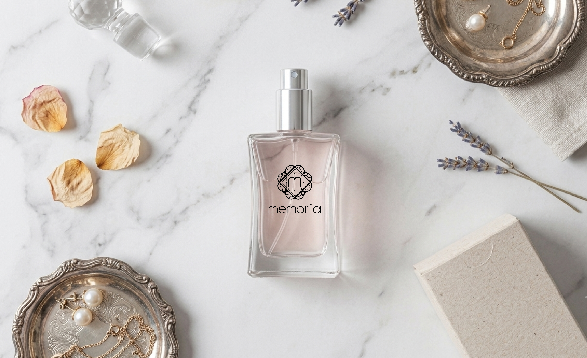
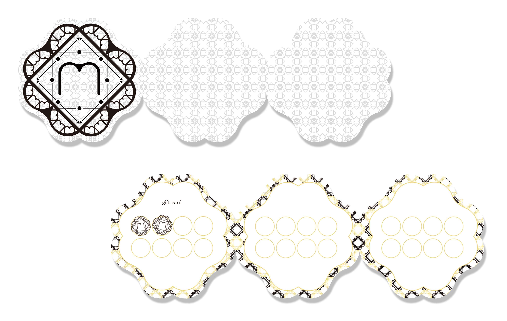
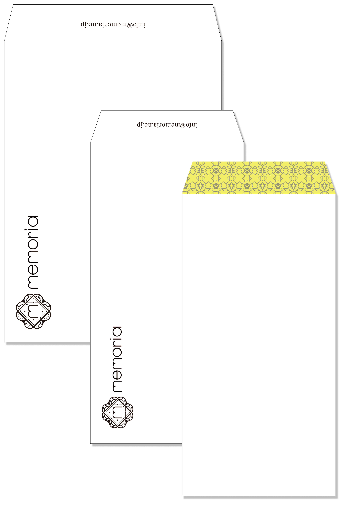
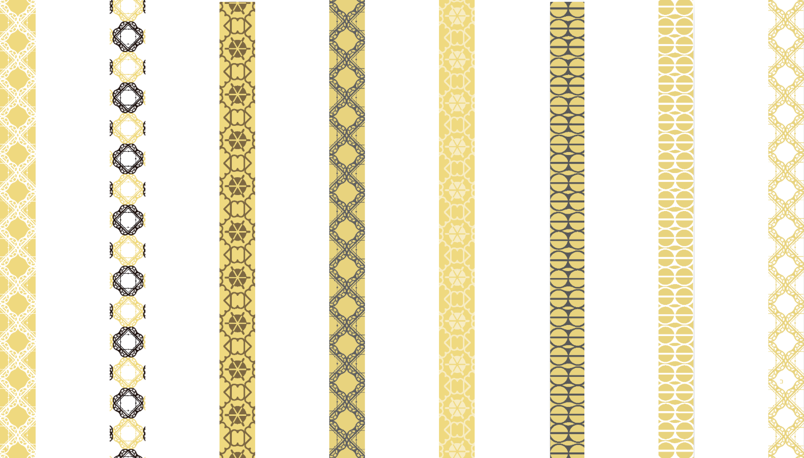
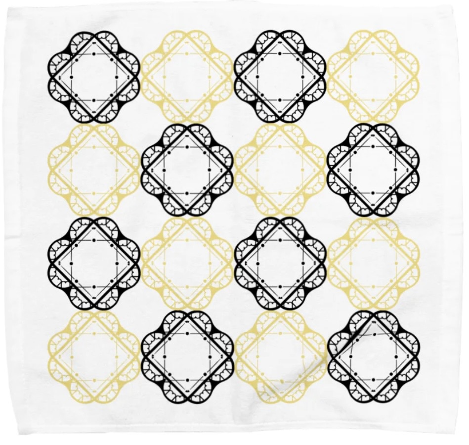
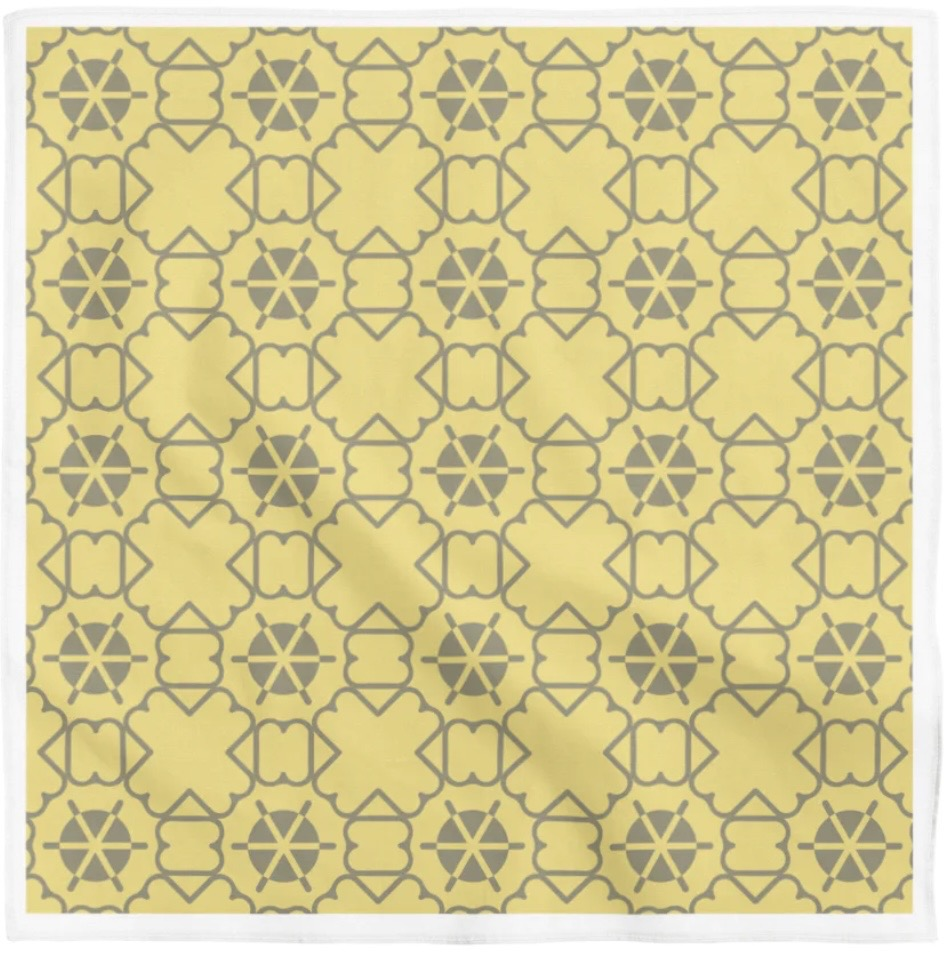

memoria｜自分だけのオリジナル香水
「memoria」は、自分だけのオリジナル香水を制作できるフレグランスブランドです。
「記憶（memory）」をテーマに、大切な思い出や特別な瞬間を香りとして残すことをコンセプトに制作しました。 香水ボトルやパッケージ、封筒のデザインを通して、記憶を大切に保管するような上品で 特別感のあるブランド表現を目指しました。
Role
- Logo Design
- Package Design
- Envelope Design
- Point Card Design
- Fragrance Blotter Design
- Handkerchief Design
Tools
- Illustrator
- Photoshop
- Procreate
Period
- 2025.09 – 2025.11
Category
- Branding
- Fragrance Branding
01
Package Design

02
Package Dieline

03
Point Card

04
Envelope Design

05
Fragrance Blotter Design

06
Handkerchief Design

